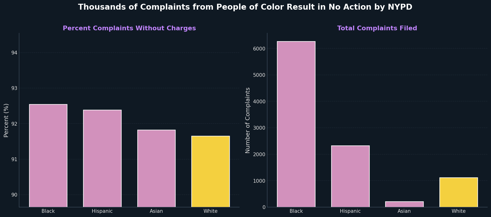
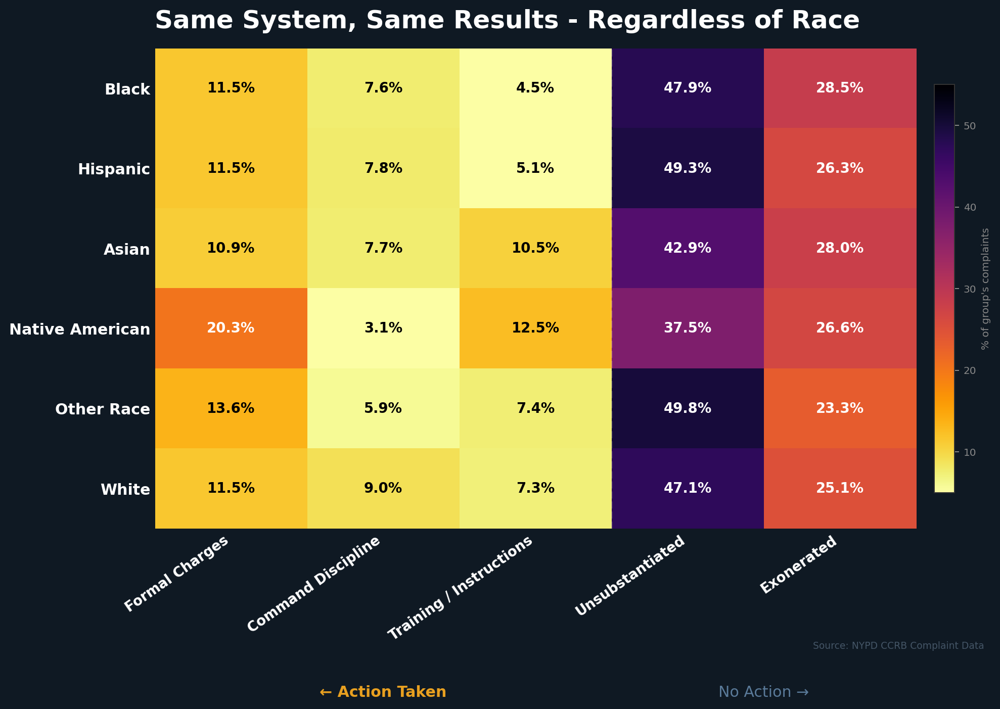

Persuasive/Deceptive Visualization Design
Proposition: "Civilian complaints involving certain racial or ethnic groups are less likely to result in disciplinary action."
Side A: Persuading Proposition is TRUE
Visualization A

Figure 1: Black and Hispanic complainants face higher rates of "no discipline" than White complainants, with many complaints from people of color resulting in no action. These disparities, while small, reveal systemic bias in how complaints are processed.
Design Decisions and Rationale:
- Decision 1: Punchy, assertive title framing ("Thousands of Complaints…Result in No Action") (Score: -1.5, Deceptive) - The title uses emotionally charged wording and frames the relationship as more direct and causal than the data can fully support. This helps immediately capture attention and sets a strong narrative direction, but it also biases interpretation before the viewer examines the visualization. A neutral alternative would describe outcomes without implying causality, but that was less effective for persuasion and therefore not chosen.
- Decision 2: Truncated and zoomed-in Y-axis for percent without charges (Score: -2, Fully Deceptive) - Starting the axis near ~90% exaggerates small differences and makes them appear much larger than they actually are. This strengthens the perceived disparity and makes the argument visually more compelling, but it distorts the true scale of variation. A full 0–100% axis would be more accurate and transparent, but it significantly weakens the visual impact, which was important for the message.
- Decision 3: Narrow definition of "no action" (grouping outcomes together) (Score: -1, Deceptive) - Combining multiple outcomes into a single category simplifies the story but removes important distinctions between different types of resolutions. This increases the apparent rate of inaction and makes the claim more persuasive, but it reduces nuance and clarity. A more detailed breakdown was considered, but it made the visualization harder to interpret quickly.
- Decision 4: Filtering to four racial groups (Score: -0.5, Slightly Deceptive) - Limiting the chart to four groups improves readability and makes comparisons easier to follow, but it excludes other categories that could provide additional context. This helps focus the narrative and reduces clutter, but it also narrows the scope of interpretation. Including all groups was considered, but it made the visualization visually overloaded and less clear.
- Decision 5: Side-by-side layout (rate + total complaints) (Score: +1, Earnest) - Placing percentages next to total complaint counts adds meaningful context about scale alongside proportional differences. This improves understanding of how small percentage gaps translate into real numbers. Separating these elements was considered, but it made it harder to connect outcome counts with outcome rates in a single view.
Side B: Persuading Proposition is FALSE
Visualization B

Figure 2: Disciplinary action rates remain nearly identical across all racial groups. The system produces consistent outcomes regardless of whether the complainant is Black, White, Hispanic, Asian, or Native American, disproving claims of racial bias.
Design Decisions and Rationale:
- Decision 1: Interpretive title ("Same System, Same Results – Regardless of Race") (Score: -1.5, Deceptive) - The title asserts a strong conclusion that downplays visible variation in the data and frames the NYPD system as fully uniform before the viewer can begin analyzing. This pushes the viewer toward a predetermined interpretation rather than allowing independent evaluation. A more neutral title would probably say something like "broadly similar" rather than "same," however it would be much less persuasive.
- Decision 2: Row ordering (POC groups first, White last) (Score: -0.5, Slightly Deceptive) - Placing White at the bottom reduces its role as a natural reference point and subtly changes how comparisons are perceived. This improves visual grouping consistency but slightly influences interpretation of equivalence across groups. A baseline-first or alphabetical ordering was considered, but it made the layout feel less structured and more scattered.
- Decision 3: Column ordering (Action Taken first) (Score: -1, Deceptive) - Emphasizing "Action Taken" first draws attention toward positive outcomes and shifts focus away from "No Action" categories. This framing supports the narrative of consistent enforcement, but it subtly biases attention. A more honest layout would sort columns by size and put Unsubstantiated first.
- Decision 4: Color palette (inferno heatmap) (Score: +1.5, Earnest) - The color scale is smooth, consistent, and effective for comparing values across groups, which supports accurate interpretation. While darker tones slightly reduce contrast in some areas, the overall encoding remains clear and perceptually reliable. Alternative palettes were considered, but they either reduced readability or introduced accessibility issues that made them less suitable.
- Decision 5: Grouping labels ("Action Taken / No Action") (Score: -1, Deceptive) - Grouping multiple distinct outcomes into broad categories simplifies the visualization but hides meaningful variation between different types of decisions. This makes the system appear more uniform and strengthens the intended message, but it reduces analytical detail. A fully separated breakdown was considered, but it made the chart more complex and harder to scan quickly.
Final Reflection
What was straightforward or difficult?
Designing these two visualizations made it clear how much influence seemingly small choices such as titles, axis ranges, grouping decisions, and color choices can have on user interpretation. The most straightforward parts were technical, like choosing chart types and implementing layouts, but the difficult part was deciding how to frame the data within the visualizations to persuade the viewer, whether deceptively or not. This required thinking outside of the box to skew perspective, without skewing actual data.
What surprised you?
What surprised us most was the power of these design choices, especially how strongly wording and framing alone can guide interpretation. It also became clear that even small stylistic decisions can shape what viewers focus on.
How do you now define "ethical analysis and visualization"?
After completing this project, we definitely have more perspective on the definition of "ethical analysis and visualization." This experience has shown us that it is less about avoiding persuasion entirely, and more about aligning persuasion with faithful data representation. Every visualization persuades to some degree, but ethical ones make their assumptions visible, avoiding distorted scales and variations of meaning. In contrast, misleading visualizations often rely on omission of detail, exaggeration or emphasis of targeted points, or perspective framing. Being clear about categories and definitions also helps viewers better understand the data.
What bounds (if any) can you draw to distinguish "acceptable" persuasive choices vs. "misleading" ones?
The boundary between acceptable and misleading choices isn't always sharp, but a useful guideline is to simply have good intentions while considering effect. If a design choice systematically pushes viewers toward a conclusion that the data alone doesn't strongly support, it's likely going to mislead. Choices that improve clarity while preserving proportionality and context feel acceptable, even if they still guide interpretation. Ultimately, ethical visualization means giving viewers the ability to reach their own informed conclusions, rather than steering them too aggressively toward one, even without directly falsifying data.